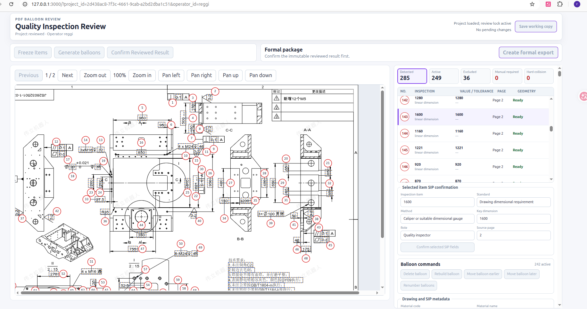
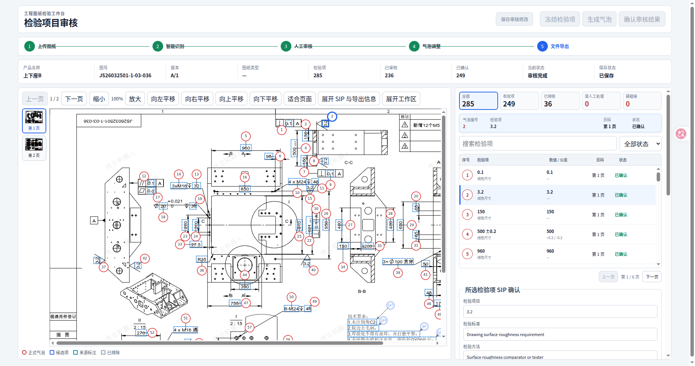
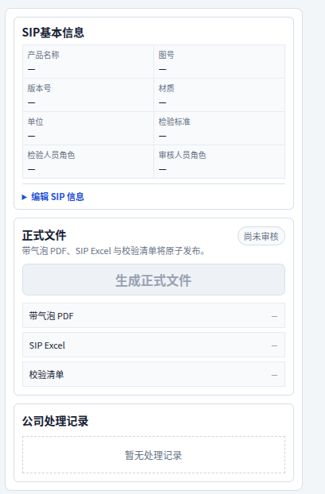
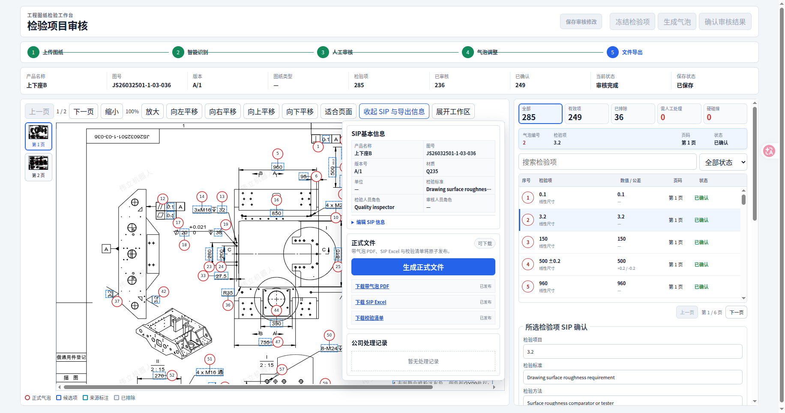

<!doctype html>
<meta charset="utf-8">
<title>Toolbar Workspace Design QA</title>
<style>
  * { box-sizing: border-box; }
  body { margin: 0; padding: 16px; background: #e8edf3; font: 14px sans-serif; }
  main { display: grid; grid-template-columns: 1fr 1fr; gap: 16px; }
  figure { margin: 0; padding: 10px; border-radius: 8px; background: white; }
  figcaption { margin-bottom: 8px; font-weight: 700; }
  img { display: block; width: 100%; height: auto; border: 1px solid #cbd5e1; }
  .panel-source img { width: auto; max-height: 620px; margin: 0 auto; }
</style>
<main>
  <figure>
    <figcaption>Source: 大图两栏工作台</figcaption>
    
  </figure>
  <figure>
    <figcaption>Implementation: 默认收起两栏工作台</figcaption>
    
  </figure>
  <figure class="panel-source">
    <figcaption>Source: SIP / 正式文件 / 公司处理记录</figcaption>
    
  </figure>
  <figure>
    <figcaption>Implementation: 工具栏展开浮层</figcaption>
    
  </figure>
</main>
